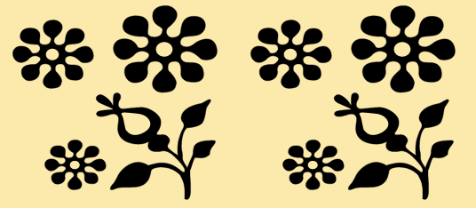

Figure 1.5: An emblem design
Printmaking
This is an artistic process that involves the transfer of images, symbols or words from a printing template made of wood, metal, glass or hard paper onto another surface such as paper, wood, fabric or a wall.
Since its beginning artists have practised printmaking by using different techniques.
Figure 1.6 shows an example of a printed design.

Figure 1.6: A printed design
Activity 1.1
Use drawing to educate and create awareness on any community issue, and the way they can solve them.